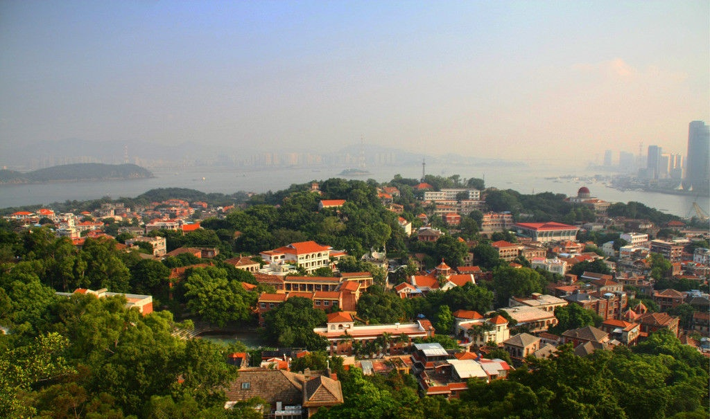
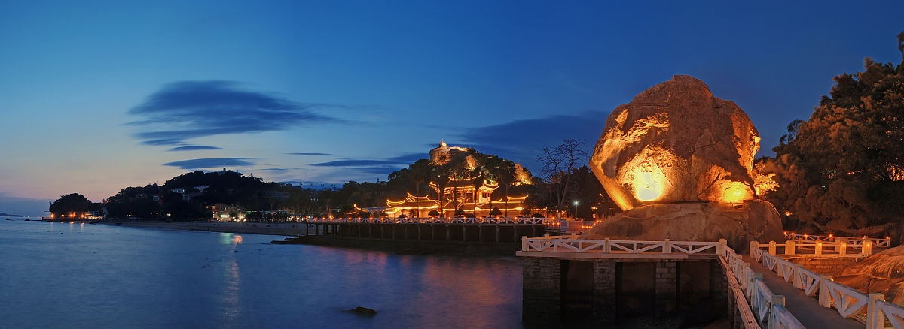

鼓浪屿
来源：鼓浪屿




鼓浪屿是一个面积1.88平方公里的小岛，与厦门隔鹭江相对，因景观秀丽多姿，素有“海上花园”、“万国建筑博览”和“音乐之乡”、“钢琴之岛”之誉，是国家级重点风景名胜区。
鼓浪屿位于厦门岛西南隅，面积1.88平方公里，常住人口约1.6万人，隔500米宽的鹭江与厦门岛相望。宋时鼓浪屿原名圆沙洲、圆洲仔，因岛西南有一海蚀岩洞受浪潮冲击，声如擂鼓，自明朝雅化为今名。鼓浪屿素有“海上花园”之誉，岛上气候宜人，四季如春，无车马喧嚣，处处鸟语花香，宛如一颗璀璨的“海上明珠”，镶嵌在厦门海湾的碧海绿波之中。鼓浪屿景区系全国文明风景旅游区、国家5A 级旅游区、国家级风景名胜区、ISO14000国家示范区、全国35个王牌景点之一、福建“十佳”风景区之首；2005年在《中国国家地理》“选美中国”评选中，脱颖而出，被评为“中国最美城区”榜首；2006年入选“外国人最值得去的50个地方金奖”。2017年7月8日第41届世界遗产大会在波兰克拉科夫召开，鼓浪屿顺利通过评审，被列入“世界文化遗产”名录。鼓浪屿周边海域为厦门港主要部分，紧临中华白海豚保护区、文昌鱼保护区、大屿岛白鹭保护区，与金门列岛隔海相望。登高远眺，鼓浪屿全景及周边美景尽收眼底，素有“不游鼓浪屿，枉费厦门行”之说。随着厦门经济特区的腾飞，鼓浪屿各种旅游配套服务设施日臻完善，成为集观光、度假、休闲、娱乐、购物为一体的综合性著名风景旅游区，每年都吸引四百万以上的海内外游客慕名前来观光游览。
岛上主要观光景点有日光岩、菽庄花园、皓月园，海底世界、毓园、环岛路、鼓浪石、天然海滨浴场等。主要节庆活动有两年一届的“鼓浪屿钢琴节暨全国青少年钢琴比赛”，一年一届的“美国音乐周”，一年一届的“中秋博饼节”等。如今，鼓浪屿已成为厦门旅游名副其实的一张金质明片。
日光岩、 菽庄花园、 国际刻字馆、皓月园、风琴博物馆五大景区联票90元。